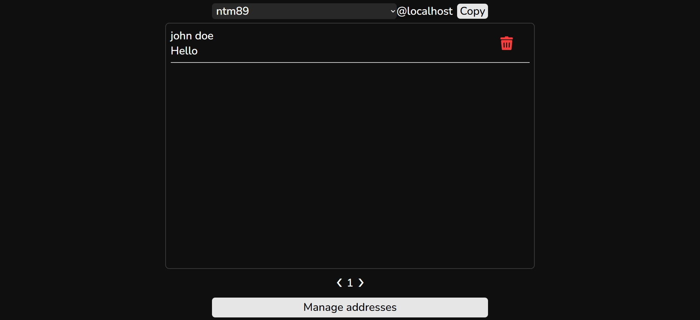
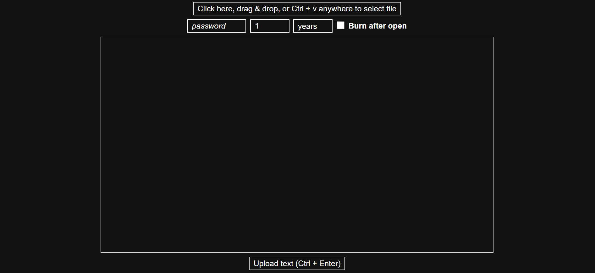
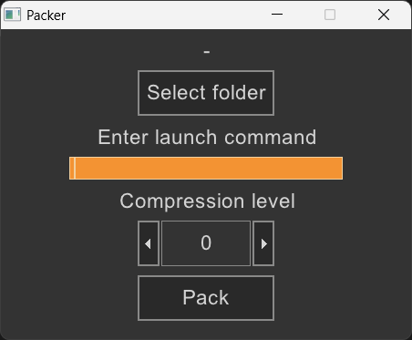
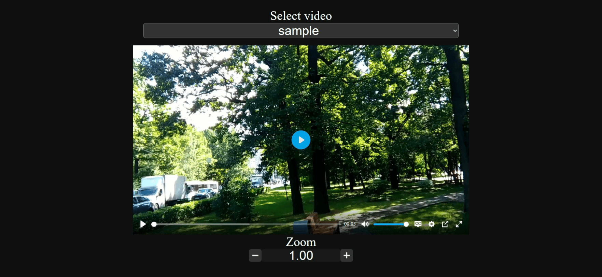
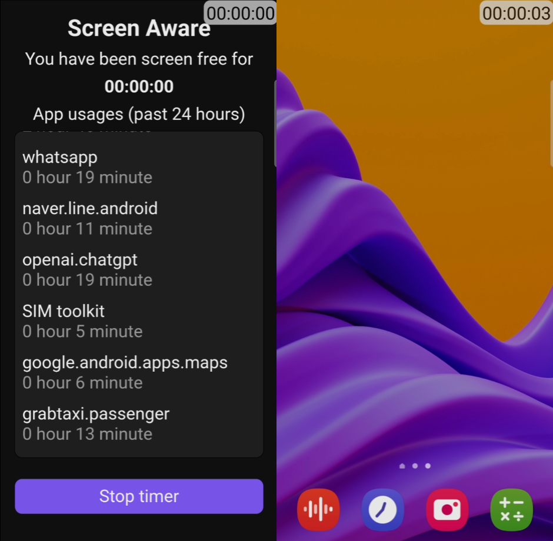
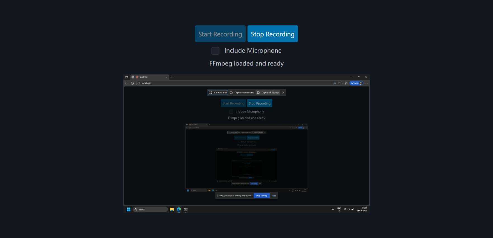

Projects

Thoramon
Sophisticated linux server monitoring tool that doesn't require any installation on target machine. It can monitor CPU, memory, network and disk I/O with historical data

NortixMail
5000+ DownloadsA fully functional email server with TLS support that lets you create unlimited email addresses under your own domain. These addresses can be used to sign up for websites without exposing your real email to reduce spam

SuperBin
1000+ DownloadsFile sharing, url shortener and pastebin all in one place with QR code, password and cURL support. Uses stream based cryptography and data processing that can handle gigabytes of data with fixed memory and cpu usage. It can run on anything including PaaS like repl.it or Render and is very easy to customize.

Single-Exe
150+ DownloadsA sophisticated tool that can convert almost anything into a single .exe file with smaller size, it can convert applications with multiple .dll files, multiple source file (.js, .py, .php, etc) and shell scripts (.bat, .ps1, .vbs, etc) into a single compressed, portable .exe file. It also uses memory mapping that can handle massive files.
Animated Wallpaper
An extremely lightweight, 1MB wallpaper engine that allows you to set .mp4 or .gif as your desktop wallpaper. It automatically pauses itself when it detects that the wallpaper is covered by another app to save system resources

Xen Stream
A straightforward, easy-to-use video streaming web app with subtitle support and video black bars hider. It has a fully responsive UI, allowing you to watch on any device, anywhere, seamlessly

Screen Aware
App that shows an overlay timer, visible above all other apps that acts as a constant reminder of how long you have been using your phone. It also provides statistics on how long you have been using individual apps for the past 24 hour

Web-ScreenRec
Lightweight screen recorder running on the web that doesn't require any native installation. It supports recording screen, desktop audio and mic simultaneously and transcoding to .mp4 format
Torranor
Sophisticated, high performant tool that allows you to distribute and download file from peer-to-peer network without having to install any local software.